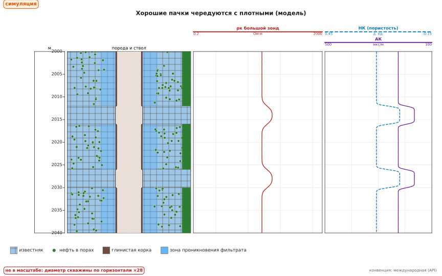

Путь › Как меняется резервуар по глубине и возникает покрышка › Шаг 31 из 56
Как хорошие пачки лежат внутри рифа
В книге: «10.3. СТРОЕНИЕ РИФОВЫХ РЕЗЕРВУАРОВ» стр. 214
Опирается на: шаг 30 «Почему коллекторы чередуются по глубине» (предпосылка), шаг 28 «Когда риф можно считать массивным» (предпосылка)
Суть
В крупном рифе лучшие пачки лежат пластами, а чаще линзами, разделёнными более плотными породами.
Доля лучших пачек в общей мощности — эффективная мощность разреза — у крупных рифов обычно велика.
Но большая доля не значит один сплошной пласт: хорошие пачки чередуются с плохими, иногда сосредоточены в отдельных интервалах.
Пороговая идея. Большая доля хороших пород в разрезе не означает, что они образуют один сплошной пласт. модель
Как это работает
Как размещены лучшие зоны
В теле крупных рифовых массивов зоны с высокими коллекторскими свойствами залегают пластами. А чаще — линзовидно-пластово: пачки утончаются и выклиниваются в стороны. стр. 214
«в теле крупных рифовых массивов формируется пластовое или чаще линзовидно-пластовое размещение зон с высокими коллекторскими свойствами»

Лучшие зоны разделены пачками с более низкими пористостью и проницаемостью. Разделяющие пачки бывают даже достаточно плотными породами. стр. 214
«зон с высокими коллекторскими свойствами, разделенных пачками с более низкими значениями пористости и проницаемости»
«разделенных пачками с более низкими значениями пористости и проницаемости или даже достаточно плотными породами»
Наиболее пористые и проницаемые пачки иногда сосредоточены лишь в определённых интервалах разреза. стр. 214
«наиболее пористых и проницаемых пачек, которые иногда концентрируются в определенных интервалах»
Эффективная мощность разреза
Суммарную мощность этих лучших пачек относят к общей мощности разреза. Это и есть эффективная мощность разреза в понимании автора. стр. 214
«Суммарная мощность этих пачек по отношению к общей мощности, т.е. эффективная мощность всего разреза»
Для крупных рифовых массивов она, как правило, достаточно велика. Но одна доля не показывает, где именно лежат хорошие пачки — подряд или вперемежку с плотными. стр. 214
«т.е. эффективная мощность всего разреза, как правило, достаточно велика»
Цифры и условия
- Эффективная мощность разреза = суммарная мощность лучших пачек / общая мощность разреза. стр. 214
- Условие: у крупных рифовых массивов эта доля обычно велика. стр. 214
Частая ошибка модель
Ошибка: Если эффективная доля велика, хорошие породы занимают сплошной интервал.
На самом деле: Автор описывает слои и линзы, разделённые пачками с более низкими свойствами; доля не показывает их размещение. стр. 214
Что это значит для данных модель
Для Ержана: не заменяйте перечень интервалов одним показателем на весь разрез.
- Вход
- Границы пачек, их мощность, пористость и проницаемость.
- Выход
- Положение лучших пачек и их относительная эффективная мощность.
- Где ломается
- Одна скважина показывает последовательность по глубине, но не всю геометрию линз.
- гипотеза Сопоставьте соседние разрезы, чтобы проверить, какие пачки продолжаются в стороны.
Где здесь ручной труд специалиста
- Входные данные
- Разрез с границами пачек и коллекторскими свойствами.
- Ручные шаги
- Выделить лучшие пачки и сопоставить их суммарную мощность с общей.
- Точки суждения
- Отличить устойчивый пласт от линзы по сопоставлению разрезов.
- Время
- Основное время уходит на согласование границ между разрезами.
- Типичные ошибки
- Записывать относительную эффективную мощность как толщину одного пласта.
Аналогия модель
Доля годных записей в наборе данных не говорит, идут ли они подряд или разделены пропусками.
Где аналогия перестаёт работать: Пачки имеют форму в пространстве; их непрерывность нельзя восстановить по одному списку интервалов.
Глубже
Доля не показывает расположение модель
Два разреза с одинаковой долей лучших пород могут отличаться тем, лежат ли они подряд или чередуются с плотными пачками. Храните отдельно итоговую долю и сами интервалы.
Новые понятия
- Рифовый массив
- Крупное тело пород, сформированное рифовой постройкой и связанными с ней отложениями. модель
- Пачка пород
- Последовательность соседних слоёв, выделенная в разрезе по общим признакам. модель
- Разрез (section)
- Последовательность пород, рассматриваемая по глубине. модель
- Пористость (porosity)
- Доля объёма породы, приходящаяся на пустоты. модель
- Проницаемость (permeability)
- Способность породы пропускать флюид через связанные пустоты. модель
- Коллекторские свойства
- Свойства породы, характеризующие её способность вмещать и пропускать флюиды; здесь прежде всего пористость и проницаемость. модель
- Мощность (thickness)
- Толщина слоя, пачки или всего рассматриваемого разреза. модель
- Эффективная мощность разреза
- В этом фрагменте — отношение суммарной мощности наиболее пористых и проницаемых пачек к общей мощности разреза. стр. 214
- Линзовидно-пластовое залегание
- Расположение вытянутыми пачками, которые утончаются, выклиниваются или меняют толщину в стороны. модель
- Плотная порода
- В данном контексте — порода с низкими коллекторскими свойствами. модель
Проверь себя
Верный ответ: Линзовидно-пластово, разделёнными более плотными пачками
Автор описывает пластовое или чаще линзовидно-пластовое размещение лучших зон. Где это в тексте (стр. 214) →
Верный ответ: Это отношение суммарной мощности лучших пачек к общей мощности; У крупных рифов она обычно достаточно велика; Она не показывает, лежат ли лучшие пачки подряд
Лучшие пачки чередуются с плотными, поэтому доля ничего не говорит о сплошности. Где это в тексте (стр. 214) →
Источник
Все утверждения шага с дословной цитатой автора и страницей книги (по PDF).
В крупном рифе зоны высоких коллекторских свойств размещаются пластами, а чаще линзовидными пластами. наблюдение
«в теле крупных рифовых массивов формируется пластовое или чаще линзовидно-пластовое размещение зон с высокими коллекторскими свойствами»
Между лучшими зонами лежат пачки с более низкими пористостью и проницаемостью. наблюдение
«зон с высокими коллекторскими свойствами, разделенных пачками с более низкими значениями пористости и проницаемости»
Разделяющие пачки могут быть достаточно плотными. наблюдение
«разделенных пачками с более низкими значениями пористости и проницаемости или даже достаточно плотными породами»
Наиболее пористые и проницаемые пачки иногда сосредоточены лишь в отдельных интервалах. наблюдение
«наиболее пористых и проницаемых пачек, которые иногда концентрируются в определенных интервалах»
Эффективная мощность всего разреза здесь означает отношение суммарной мощности лучших пачек к общей мощности разреза. наблюдение
«Суммарная мощность этих пачек по отношению к общей мощности, т.е. эффективная мощность всего разреза»
Для крупных рифовых массивов эта относительная эффективная мощность обычно достаточно велика. наблюдение
«т.е. эффективная мощность всего разреза, как правило, достаточно велика»
На этот шаг опираются: шаг 32 «Линзы и пласты пористости на разрезе», шаг 33 «Карачаганак: плотные пачки и трещины», шаг 34 «Когда флюиду трудно двигаться вверх».